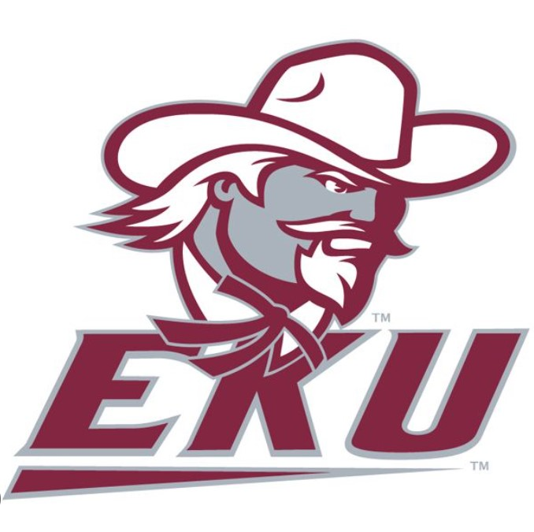

I’m currently pursuing my Master’s in Library Science at Eastern Kentucky University, where I’m learning to lead, support, and inspire through literacy and learning innovation.
Hello! My name is Crystal Austin, and I am an educator committed to access, equity, and meaningful learning in the school library setting. With over six years of classroom teaching experience, I believe that libraries are more than just a space for books—they are hubs for curiosity, creativity, and connection.
I have completed practicum hours at both elementary and high school libraries, where I collaborated with students, co-taught lessons, and worked closely with librarians to align library services with school-wide goals. My background in education has helped shape my approach to literacy support, technology integration, and student-centered learning.